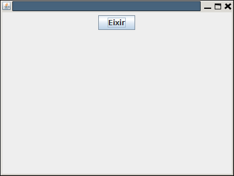

4.2.- JButton
El JButton és un dels components més habituals. Servirà per a crear un botó, amb un text o una imatge.
Creació
En el moment de crear-lo li podem posar el text o la imatge. També es poden posar després modificant les propietats:
JButton boto1 = new JButton("Botó 1");
JButton boto2 = new JButton(new ImageIcon("imatge.jpg"));
Associar una acció
Per a assignar una acció quan fem clic en un botó, haurem de fer 3 coses:
- La primera és que la classe finestra que estem definint (JFrame) ha d'implementar també ActionListener:
public class Finestra extends JFrame implements ActionListener {
- Haurem de registrar l'acció del botó dins del programa:
boto1.addActionListener(this) - En el mètode heretat de ActionListener actionPerformed, discriminar si és el botó en qüestió i assignar-li les accions oportunes (normalment cridar un altre mètode). Mireu que com és un altre mètode diferent d'iniciar, el botó haurà d'estar declarat no en iniciar, sinó en la mateixa classe finestra
Mirem un exemple molt senzill en el qual posem únicament un botó, per a eixir del programa, encara que ja tenim que quan es tanca la finestra també es tanca el programa. L'acció a fer és senzillament System.exit(0)
import java.awt.FlowLayout;
import java.awt.event.ActionEvent;
import java.awt.event.ActionListener;
import javax.swing.JButton;
import javax.swing.JFrame;
public class Finestra extends JFrame implements ActionListener{
JButton boto1 = new JButton("Eixir");
public void iniciar(){
setDefaultCloseOperation(JFrame.EXIT_ON_CLOSE);
setSize(400,300);
getContentPane().setLayout(new FlowLayout());
getContentPane().add(boto1);
boto1.addActionListener(this);
setVisible(true);
}
@Override
public void actionPerformed(ActionEvent e) {
if (e.getSource()==boto1){
System.out.println("Final");
System.exit(0);
}
}
}

Llicenciat sota la Llicència Creative Commons Reconeixement NoComercial SenseObraDerivada 2.5